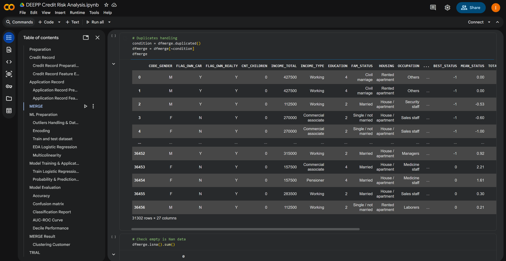
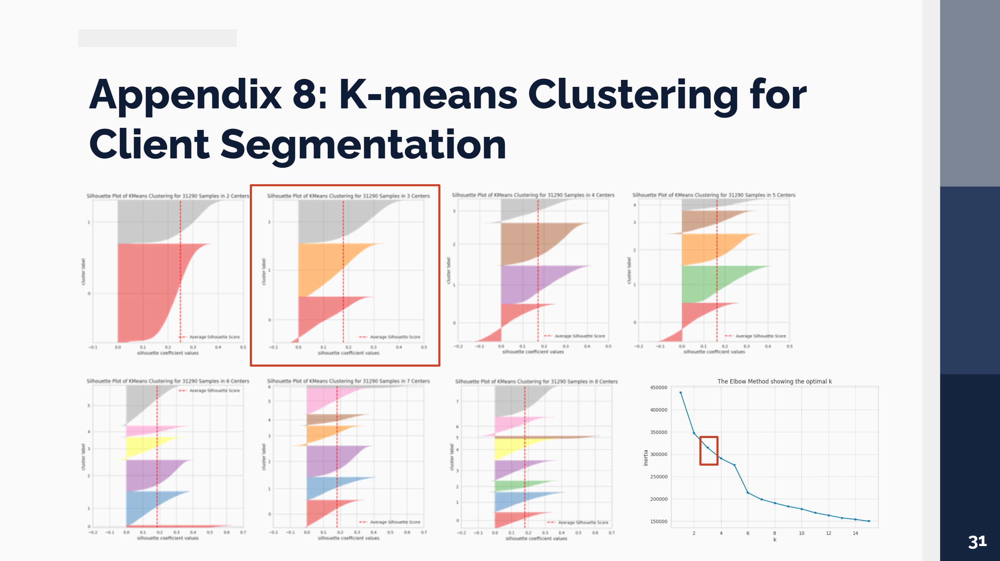
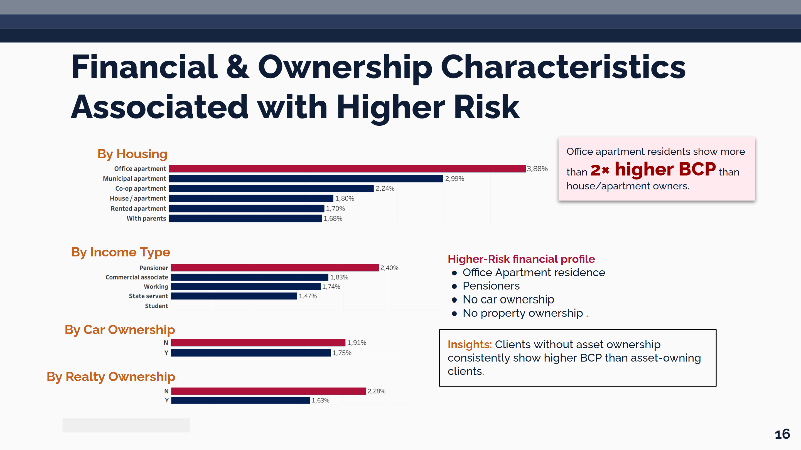

Credit Risk Monitoring Dashboard
Built a credit risk dashboard that estimates customer default probability, segments customers by risk level, and helps monitor portfolio risk for earlier intervention.

Project Overview
Summary / Context
A retail bank needed a better way to identify high-risk customers before they defaulted. This project combined customer and credit history data into a dashboard for continuous portfolio monitoring.
Goals
Estimate each customer's probability of default, identify high-risk clients, and support earlier intervention to reduce portfolio risk.
Process
Combined customer and repayment data, prepared analytical features, built a logistic regression model, applied customer segmentation, and developed a Tableau dashboard.
Output
Delivered a dashboard that identifies 6,856 high-risk customers (21.9% of the portfolio), estimates default probability, and segments the portfolio into Stable, Family, and Vulnerable groups to support proactive risk management.
Key Responsibilities
- Integrated customer application and repayment data into a single analytical dataset.
- Prepared data and engineered features for predictive modeling.
- Built a logistic regression-based Bad Client Probability model to estimate default risk and identify high-risk clients.
- Applied K-Means clustering to segment customers into Stable, Family, and Vulnerable groups for targeted risk management strategies.
- Designed a Tableau dashboard for portfolio monitoring and customer-level analysis.
Tools & Methods
Tools
Methods
Recommendations
- Introduce early monitoring for customers with a default probability above 50%.
- Prioritize collection efforts on high-risk customer segments.
- Review lending policies for applicants with repeated delinquency history.
- Use customer segmentation to personalize risk treatment strategies.
Project Gallery



